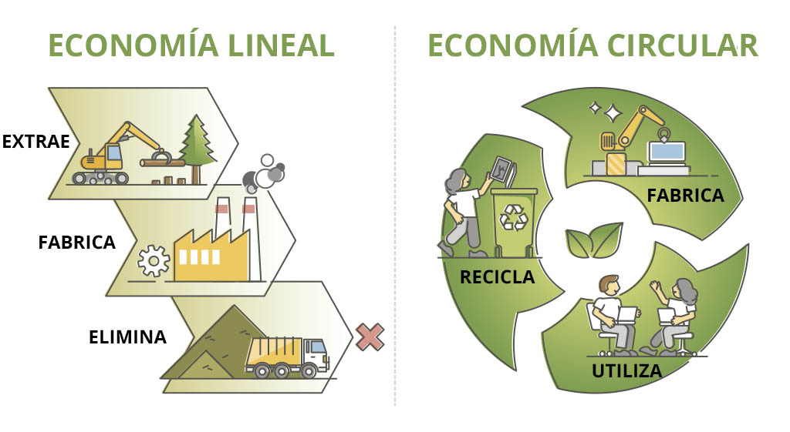
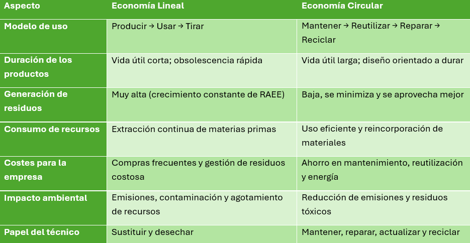

La forma en que producimos, utilizamos y gestionamos los recursos tecnológicos determina en gran medida el impacto ambiental del sector TIC. Actualmente conviven dos modelos opuestos:
- la economía lineal, basada en el consumo rápido y el descarte,
- y la economía circular, orientada a mantener los recursos en uso el mayor tiempo posible.
A continuación se presenta una comparativa clara de ambos modelos y su influencia en el medio ambiente.

1. Diferencias entre Economía Lineal y Economía Circular

2. Impacto ambiental en el sector TIC
El sector tecnológico genera un impacto considerable debido a varios factores:
A) Extracción de materias primas
La fabricación de ordenadores, móviles, servidores y otros dispositivos requiere minerales como litio, cobre, cobalto u oro. Esto provoca:
- contaminación del suelo y del agua,
- elevado consumo energético,
- riesgos sociales y laborales en zonas de extracción.
B) Consumo energético
Centros de datos, servidores, dispositivos y redes consumen grandes cantidades de energía.
Un modelo lineal implica:
- más dispositivos físicos,
- más servidores encendidos,
- más consumo eléctrico y más emisiones.
C) Generación de residuos electrónicos (RAEE)
Los RAEE son uno de los tipos de residuos que más crece en el mundo.
Si no se gestionan adecuadamente pueden liberar sustancias tóxicas como:
- plomo,
- mercurio,
- cadmio,
- retardantes de llama.
3. ¿Cómo reduce la economía circular el impacto ambiental?
La economía circular contribuye a reducir de forma notable la huella ambiental mediante acciones como:
♻️ Reutilización de equipos
Disminuye la necesidad de fabricar nuevos dispositivos y reduce las emisiones asociadas a la producción.
🔧 Reparación y mantenimiento
Permiten alargar la vida útil de los equipos, retrasando la generación de residuos.
🔄 Reacondicionamiento
Transforma equipos antiguos en dispositivos plenamente funcionales para tareas básicas.
🗑️ Reciclaje RAEE
Recupera materiales valiosos como cobre, aluminio, oro, litio o plásticos técnicos, reduciendo la extracción de minerales.
⚡ Uso eficiente de la energía
Gracias a prácticas como:
- configuración de equipos eficientes,
- virtualización,
- reducción de hardware físico,
- uso responsable de la nube.
4. Relación con los Objetivos de Desarrollo Sostenible (ODS)
La transición hacia la economía circular contribuye directamente a varios ODS:
ODS 12 – Producción y Consumo Responsables: menos residuos, más reciclaje y aprovechamiento de materiales.
ODS 13 – Acción por el Clima: reducción de emisiones derivadas de la fabricación y del consumo energético.
ODS 8 – Trabajo Decente y Crecimiento Económico: generación de empleo verde en reparación, reacondicionamiento y gestión de RAEE.
Conclusión
La economía circular es un modelo esencial para el futuro del sector TIC. Permite reducir residuos electrónicos, ahorrar energía, disminuir emisiones y prolongar la vida útil de los dispositivos, convirtiéndose en una herramienta clave para proteger el medio ambiente y mejorar la eficiencia de empresas tecnológicas.